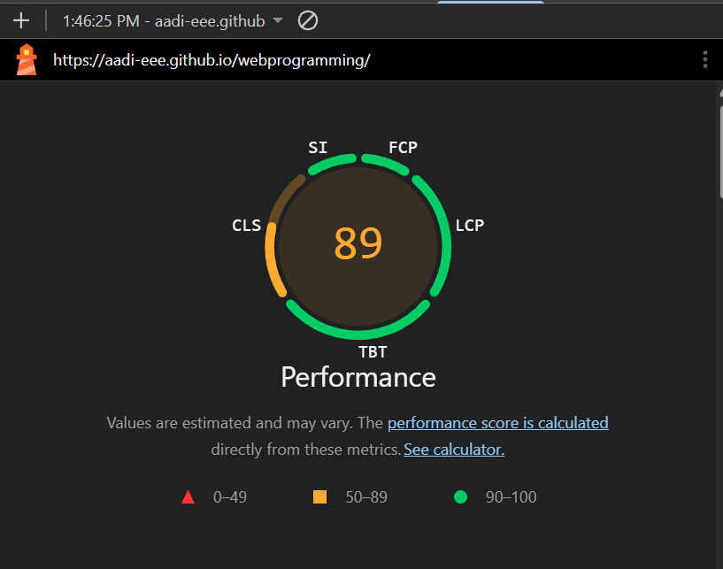
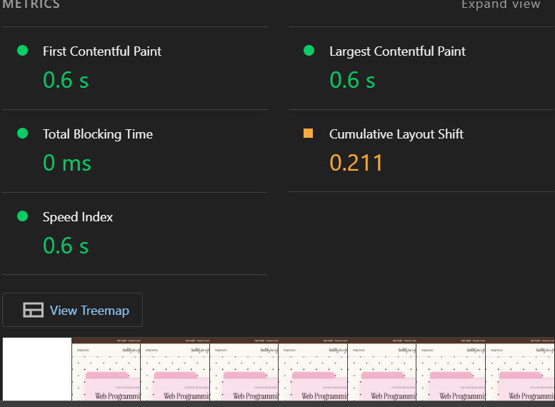
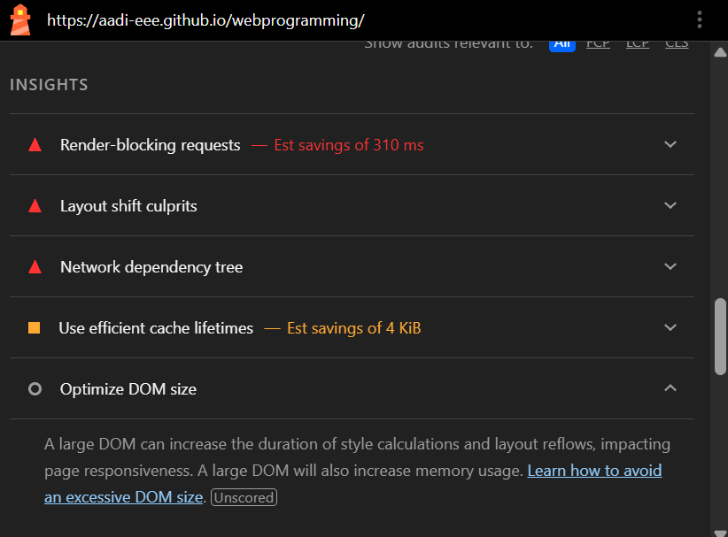
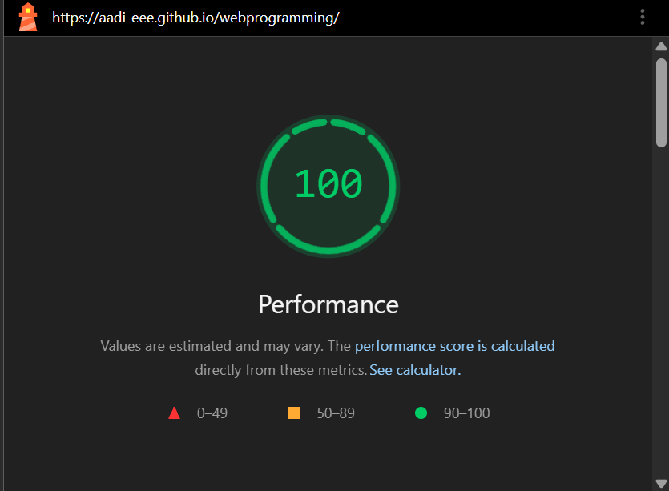
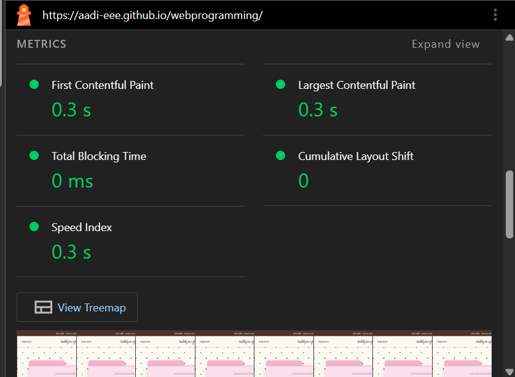

Website Performance Audit Report
1. Introduction
I used Google Lighthouse to evaluate the performance of my personal portfolio website. I ran the audit with only the Performance category selected, in an Incognito window with the same device setting, once before and once after making improvements.
2. Before the Improvements
Initial Lighthouse performance score: 89/100
The page already loaded quickly, but it was one point short of the green range.
| Metric | Before |
|---|---|
| First Contentful Paint | 0.6 s |
| Largest Contentful Paint | 0.6 s |
| Total Blocking Time | 0 ms |
| Cumulative Layout Shift | 0.211 |
| Speed Index | 0.6 s |


3. Issues Identified
The Insights section of the report flagged these problems.
Issue 1: Render-blocking requests (est. savings 310 ms)
My Google Fonts stylesheet and my CSS file were both loaded in the <head>, so the browser had to download them before it could show anything.
Issue 2: Layout shift culprits (CLS 0.211)
My page uses two web fonts. When they finished loading, the text changed font and the layout jumped. This was the only metric in the orange range.
Issue 3: Efficient cache lifetimes (est. savings 4 KiB)
I did not fix this one. GitHub Pages sets its own cache headers and I cannot change them, and the savings were tiny.

4. Performance Fixes
Fix 1: Self-Hosted Fonts
I downloaded Instrument Serif and Pinyon Script and served them from my own site instead of Google Fonts. This removes the render-blocking request to another server.
Before (index.html)
<link href="https://fonts.googleapis.com/css2?family=Instrument+Serif...&display=swap"
rel="stylesheet">After (style.css)
@font-face {
font-family: "Instrument Serif";
src: url("fonts/instrument-serif-v5-latin-regular.woff2") format("woff2");
font-weight: 400;
font-style: normal;
font-display: swap;
}Fix 2: Preloaded Fonts
I added preload hints so the browser starts downloading the fonts right away. The text now appears in the correct font sooner, which reduces the layout shift when fonts load.
Before (index.html)
<!-- fonts only discovered after the CSS was parsed -->After (index.html)
<link rel="preload" href="fonts/pinyon-script-v24-latin-regular.woff2"
as="font" type="font/woff2" crossorigin>Fix 3: Minified CSS
I removed CSS rules my page no longer used and minified the stylesheet. The file went from 9,124 bytes to 6,729 bytes, about 26% smaller, so it downloads faster.
Before (index.html)
<link rel="stylesheet" href="style.css">After (index.html)
<link rel="stylesheet" href="style.min.css">5. After the Improvements
Final Lighthouse performance score: 100/100


| Metric | Before | After |
|---|---|---|
| Performance score | 89 | 100 |
| First Contentful Paint | 0.6 s | 0.3 s |
| Largest Contentful Paint | 0.6 s | 0.3 s |
| Total Blocking Time | 0 ms | 0 ms |
| Cumulative Layout Shift | 0.211 | 0 |
| Speed Index | 0.6 s | 0.3 s |
6. Which Change Mattered Most
The biggest change was self-hosting and preloading my fonts. Layout shift dropped from 0.211 to 0, and First Contentful Paint went from 0.6 s to 0.3 s, which matches the two problems Lighthouse flagged: the render-blocking font request and the text jumping when the fonts arrived. Minifying the CSS helped less, since it only saved about 2.4 KB.
A browser cannot show a page until it has downloaded the CSS and fonts the page depends on, so every extra file or outside server in the <head> delays the first paint. Hosting the fonts myself and loading them early means the browser has what it needs sooner and the text does not jump when it arrives.
7. Conclusion
I self-hosted and preloaded my two fonts so they no longer block the first paint or shift the layout, and I minified my stylesheet to make it smaller. These changes raised my Performance score from 89 to 100.